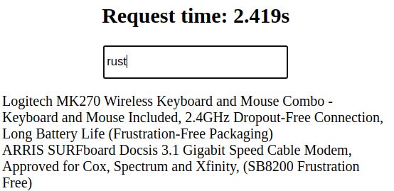
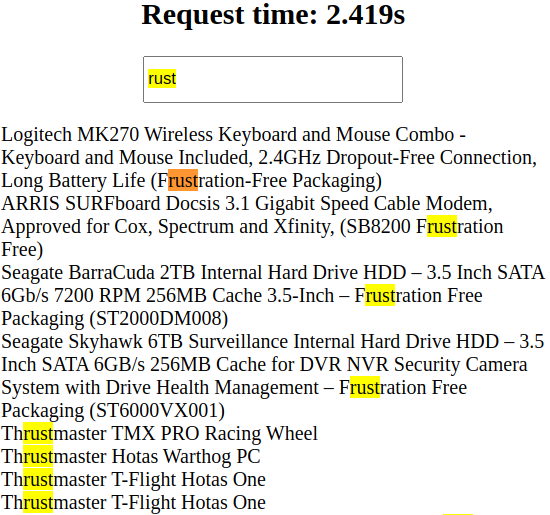
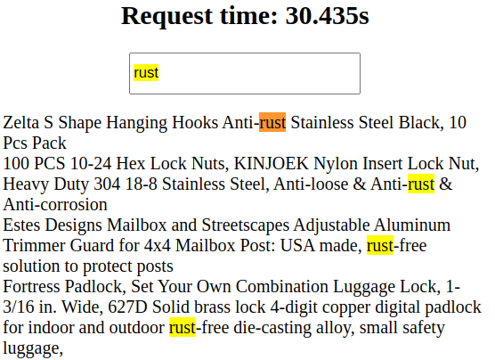
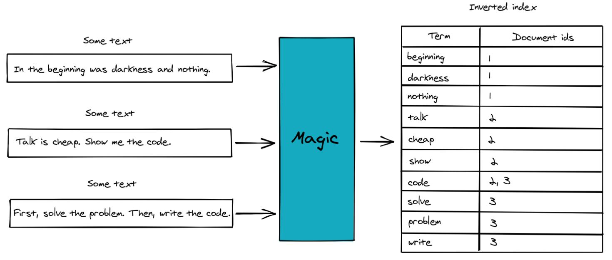
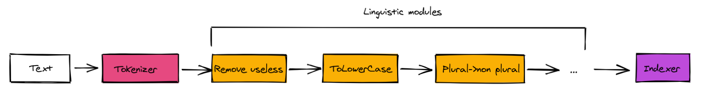
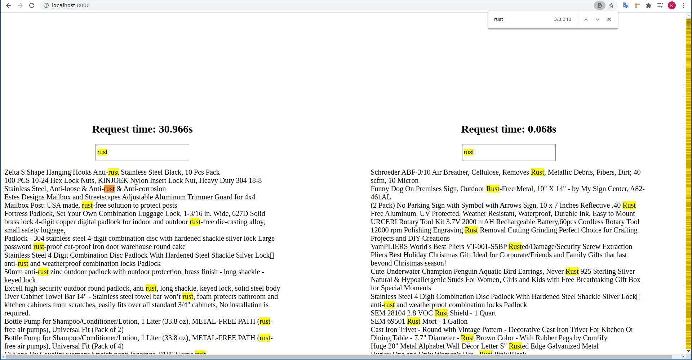

MYOX: full text search engine
Full Text Search Engine🔗
Suppose you are building an online store and you want to give to customers an ability to search against goods.
How are you going to implement it?
Preparations🔗
Let's implement a stupid page where our potential user searches.
Firstly, let's install all needed packages for that.
$ cargo install wasm-pack # Compile Rust to Wasm and generate JS interop code
$ cargo install cargo-make # Task runner
$ cargo add wasm-bindgen # glue for Rust -> WASM, WASM <- Rust
$ cargo add yew # Rust -> Wasm frontend framework
$ cargo add instant # needs for request's time measurement
$ cargo add http # make requests from ui
$ cargo add serde # [de]serialization
$ cargo add serde_json # json [de]serialization
$ cargo add anyhow # flexible errors
$ cargo add rocket # server framework
$ cargo add rocket-contrib # useful things for rocket such as static serving
$ cargo add csv # parse csv files
$ cargo add regex # -..-
Now lets open Cargo.toml file and modify it a little bit:
[lib]
crate-type = ["cdylib", "rlib"] # for WASM
name = "myox_ftse_lib"
path = "src/lib.rs"
[[bin]]
name = "myox_ftse"
path = "src/bin.rs"
# --//--
# [dependencies]
# --//--
# time measurement in WASM
instant = { version = "0.1.6", features = [ "wasm-bindgen", "now" ] }
The second step is to create a job which will be used for UI building. Lets create a Makefile.toml in the project root(it was token from the perfect article: introduction into yew):
# Every change in our code will trigger ui project rebuilding
# so that we don't need to do it manually.
# All asssets will be stored in myox_ftse/static/
[tasks.build]
command = "wasm-pack"
args = ["build", "--dev", "--target", "web", "--out-name", "wasm", "--out-dir", "./static"]
watch = { ignore_pattern = "static/*" }
Let's code a UI🔗
All ui will be stored in the single(ui.rs) file.
// src/lib.rs
mod ui;
I won't give many comments about UI part, there is a great article about that which was mentioned earlier and I recommend to read it.
Conceptually, let's have 2 forms which at the same time send requests to a server with a search query. Additionally let's measure a time which is needed to get responses back, because we all like numbers but not a row info, isn't it?
// src/ui.rs
use anyhow::Error;
use http::{Request, Response};
use serde_json::json;
use wasm_bindgen::prelude::*;
use yew::format::Json;
use yew::prelude::*;
use yew::services::{fetch::FetchTask, ConsoleService, FetchService};
pub struct Model {
link: ComponentLink<Self>,
search_value: String,
// this values are used for requests time measurements
requests_start_time: f64,
request_time_slow_diff_secs: f64,
request_time_fast_diff_secs: f64,
// found items to render
found_items_slow: Vec<String>,
found_items_fast: Vec<String>,
// in order to not drop and as a consequence abort our requests
// we store them
requests: Option<Vec<FetchTask>>,
}
pub enum Msg {
Lookup(String),
FoundSlow(Vec<String>),
FoundFast(Vec<String>),
}
impl Component for Model {
type Message = Msg;
type Properties = ();
fn create(_: Self::Properties, link: ComponentLink<Self>) -> Self {
Self {
link,
search_value: "".to_owned(),
requests: None,
requests_start_time: instant::now(),
request_time_slow_diff_secs: 0.0,
request_time_fast_diff_secs: 0.0,
found_items_slow: vec![],
found_items_fast: vec![],
}
}
fn update(&mut self, msg: Self::Message) -> ShouldRender {
match msg {
Msg::Lookup(v) => {
self.search_value = v.clone();
let body = &json!({ "text": v });
let request_slow = Request::post("/goods/lookup_slow")
.body(Json(body))
.expect("slow request was sent");
let request_fast = Request::post("/goods/lookup_fast")
.body(Json(body))
.expect("fast request was sent");
let slow_request = FetchService::fetch(
request_slow,
self.link
.callback(|response: Response<Result<String, Error>>| {
ConsoleService::log(&format!("{:?}", response));
Msg::FoundSlow(
serde_json::from_slice(
&response.body().as_ref().unwrap().as_bytes(),
)
.unwrap(),
)
}),
)
.expect("slow fetch was not completed");
let fast_request = FetchService::fetch(
request_fast,
self.link
.callback(|response: Response<Result<String, Error>>| {
ConsoleService::log(&format!("{:?}", response.body()));
// Msg::FoundFast(
// serde_json::from_slice(
// &response.body().as_ref().unwrap().as_bytes(),
// )
// .unwrap(),
// )
Msg::FoundFast(vec![])
}),
)
.expect("fast fetch was not completed");
self.requests = Some(vec![slow_request, fast_request]);
self.requests_start_time = instant::now();
}
Msg::FoundSlow(items) => {
self.found_items_slow = items;
self.request_time_slow_diff_secs =
(instant::now() - self.requests_start_time) / 1000.0;
}
Msg::FoundFast(items) => {
self.found_items_slow = items;
// useless for now
// self.request_time_fast_diff_secs =
// (instant::now() - self.requests_start_time) / 1000.0;
}
}
true
}
fn change(&mut self, _: Self::Properties) -> ShouldRender {
true
}
fn view(&self) -> Html {
html! {
<div class="forms">
<div class="slow">
{self.get_slow_form()}
</div>
<div class="fast">
{self.get_fast_form()}
</div>
</div>
}
}
}
impl Model {
fn get_slow_form(&self) -> Html {
html! {
<div class="form">
<h2>{format!("Request time: {:.3}s", self.request_time_slow_diff_secs)}</h2>
<input
class="new-todo"
placeholder="What are we are looking for?"
value=&self.search_value
oninput=self.link.callback(|e: InputData| Msg::Lookup(e.value))
/>
<ul class="found-items">{for self.found_items_slow.iter().map(|i| html! {<span>{format!("{}", i)}</span>})}</ul>
</div>
}
}
fn get_fast_form(&self) -> Html {
html! {
<div class="form">
<h2>{format!("Request time: {:.3}s", self.request_time_fast_diff_secs )}</h2>
<input
class="new-todo"
placeholder="What are we are looking for?"
value=&self.search_value
oninput=self.link.callback(|e: InputData| Msg::Lookup(e.value))
/>
<ul class="found-items">{for self.found_items_fast.iter().map(|i| html! {<span>{format!("{}", i)}</span>})}</ul>
</div>
}
}
}
#[wasm_bindgen(start)]
pub fn run_app() {
App::<Model>::new().mount_to_body();
}
Server🔗
In order to search goods by descriptions we need descriptions.
I found this one.
Download and place it in project's root(if you want).
Descriptions are stored in csv, so firstly we need to parse them:
// src/lib.rs
// --//--
mod parse_csv;
use std::error::Error;
pub fn parse_csv() -> Result<Vec<(usize, String)>, Box<dyn Error>> {
let wiki = std::io::BufReader::new(
std::fs::File::open("./amazon_combined_scrapped_data.csv").unwrap(),
);
let mut descriptions = vec![];
let mut rdr = csv::Reader::from_reader(wiki);
for (i, result) in rdr.records().enumerate() {
let record = result?;
for f in record.iter() {
descriptions.push((i, f.to_string()));
}
}
Ok(descriptions)
}
So now with that function we can get a vector of goods descriptions.
The last part is a server itself:
// src/lib.rs
// --//--
mod server.rs
// src/server.rs
use rocket::{post, routes, State};
// get and send JSON's
use rocket_contrib::json;
use rocket_contrib::json::Json;
use rocket_contrib::json::JsonValue;
// serves our static assets for UI
use rocket_contrib::serve::StaticFiles;
// deserializes JSON bodies from UI
use serde::Deserialize;
use crate::parse_csv;
// server's shared state
// basically it's descriptions vector of goods which we sell =)
struct Store {
goods: Vec<String>,
}
// this funciton is used for our server bootstraping
pub fn run_server() {
// parsed goods descritpions
let items = parse_csv::parse_csv().unwrap();
rocket::ignite()
.manage(Store { goods: items })
// serves static files which are placed in myox_ftse/static/
.mount("/", StaticFiles::from("./static"))
// there will be two routes:
// the first for slow requests serving
// the second one for fast requests serving
// currently only slow requests serving is implemented
// fast part will be implemented incrementally
.mount("/goods", routes![lookup_slow, lookup_fast])
.launch();
}
#[rocket::post("/lookup_slow", data = "<search_text>")]
fn lookup_slow(state: State<Store>, search_text: Json<Search>) -> JsonValue {
let obj = search_text.into_inner();
let re = regex::Regex::new(&format!("\\b{}\\b", obj.text)).unwrap();
let found: Vec<String> = state
.inner()
.goods
.iter()
.filter(|item| item.find(obj.text.as_str()).is_some())
.map(|v| v.to_string())
.collect();
json!(found)
}
#[rocket::post("/lookup_fast", data = "<search_text>")]
fn lookup_fast(state: State<Store>, search_text: Json<Search>) -> JsonValue {
let v: Vec<String> = vec![];
json!(v)
}
Finnaly let's bootstrap it!
// src/bin.rs
fn main() {
myox_ftse_lib::server::run_server();
}
Now open a terminal and in project's root type:
// for ui rebuildings
$ cargo make build
Open the second terminal and type there:
// start a server
$ cargo run

Not so bad.
After some time customer comes back and says that it's inconvenient to scroll through things which are useless.
Take a look: we searched rust but there are results which are just substrings but not a word what we are looking for:

Ok, how we can fix it? Probably rexeges can help us. Let's give it a try!
// src/server.rs
#[rocket::post("/lookup_slow", data = "<search_text>")]
fn lookup_slow(state: State<Store>, search_text: Json<Search>) -> JsonValue {
let obj = search_text.into_inner();
+ let re = regex::Regex::new(&format!("\\b{}\\b", obj.text)).unwrap();
let found: Vec<String> = state
.inner()
.goods
.iter()
- .filter(|item| item.find(obj.text.as_str()).is_some())
+ .filter(|item| re.is_match(item.as_str()))
.map(|v| v.to_string())
.collect();
json!(found)
}
Let's take a look:

The good news - the problem solved. The bad news - the customer won't wait so much time.
Can we do better? Yes, we can!
Inverted Index, Full Text Search Engines, etc🔗
The key idea is find a suitable data structure which will be used for searching. You've probably seen in readed books a page which shows a word and pages which contain this word. And that's it.
In a more detail: there are o lot of texts. We want to search against them. Let's read all documents and save a word with corresponded document id. When searching - make a lookup against all words, find corresponded documents and retrieve them.

An attentive reader will notice that not all words after texts processing stored in the table. Futhermore they have a different form.
Indeed there are words which are often used and kind of useless: and, or, the, etc.
Punctuation marks are also not super usefull.
Let's consider Rust and rust words: they have the same semantics(in the sense of the word meaning) but they are not equal -> let's make them lowercased.
Let's consider cars and car: these both are also about the same, but one plural, the other one not. Let's also get rid of such cases and store only one word in its initial form.
This all happens in this green block. Let's unwrap it.

Tokenizer gets input and splits it into lexemes. Linguistic modules preprocess them before they trap into indexer which stores them.
I hope that now you understand a key idea. Let's code it.
// src/lib.rs
// --//--
mod tokenizer;
mod lingua;
// src/tokenizer.rs
pub fn tokenize(s: &str) -> Vec<String> {
s.split::<fn(char) -> bool>(|l| !l.is_alphabetic())
.map(|v| v.to_string())
.collect()
}
// src/lingua.rs
// this function is basically a pipeline of linguistic modules
pub fn preprocess(tokens: Vec<(usize, String)>) -> Vec<(usize, String)> {
todo!()
}
fn to_lower_case(tokens: Vec<(usize, Vec<String>)>) -> Vec<(usize, Vec<String>)> {
tokens
.iter()
.map(|(i, ts)| (*i, ts.iter().map(|s| s.to_lowercase()).collect()))
.collect()
}
Next we need to remove all "useless"(stopwords) words. There are different sources which make analysis and can provide such info.
We will use the crate called stopwords as well as lazy_static for storing these words:
cargo add stopwords
cargo add lazy_static
// src/lingua.rs
// --//--
lazy_static::lazy_static! {
static ref STOPWORDS: HashSet<&'static str> = Spark::stopwords(Language::English)
.unwrap()
.iter()
.map(|v| *v)
.collect();
}
// --//--
fn remove_stopwords(mut tokens: Vec<(usize, Vec<String>)>) -> Vec<(usize, Vec<String>)> {
tokens
.iter_mut()
.for_each(|(_, ts)| ts.retain(|s| !STOPWORDS.contains(&s.as_str())));
tokens
}
Next let's normalize words. This process is called stemming:
$ cargo add rust-stemmers
// src/lingua.rs
// --//--
use rust_stemmers::{Algorithm, Stemmer};
// --//--
fn normalize(tokens: Vec<(usize, Vec<String>)>) -> Vec<(usize, Vec<String>)> {
let en_stemmer = Stemmer::create(Algorithm::English);
tokens
.iter()
.map(|(i, ts)| {
(
*i,
ts.iter()
.map(|s| en_stemmer.stem(&s.as_str()).to_string())
.collect(),
)
})
.collect()
}
Finnally, let's compose this processors:
pub fn preprocess(tokens: Vec<(usize, Vec<String>)>) -> Vec<(usize, Vec<String>)> {
- todo!()
+ [to_lower_case, remove_stopwords, normalize]
+ .iter()
+ .fold(tokens, |transformed, processor| processor(transformed))
}
Now we need to store processed values:
// src/lib.rs
// --//--
mod indexer;
// src/indexer.rs
use std::collections::{HashMap, HashSet};
pub fn index(vocabulary: Vec<(usize, Vec<String>)>) -> HashMap<String, HashSet<usize>> {
let mut inv_index: HashMap<String, HashSet<usize>> = HashMap::new();
vocabulary.into_iter().for_each(|(i, ts)| {
ts.into_iter().for_each(|s| {
inv_index.entry(s).or_default().insert(i);
});
});
inv_index
}
We near the finish. Let's add a fast lookup variant to our API:
// src/server.rs
struct Store {
goods: Vec<(usize, String)>,
+ indexed_goods: std::collections::HashMap<String, std::collections::HashSet<usize>>,
}
pub fn run_server() {
let now = std::time::Instant::now();
let items = parse_csv::parse_csv().unwrap();
+ let indexed_goods = crate::indexer::index(crate::lingua::preprocess(
+ items
+ .clone()
+ .iter()
+ .map(|(i, s)| (*i, crate::tokenizer::tokenize(s.as_str())))
+ .collect(),
+ ));
println!("Parsing time: {}", now.elapsed().as_secs());
println!("Items count: {}", items.len());
rocket::ignite()
.manage(Store {
goods: items,
+ indexed_goods,
})
.mount("/", StaticFiles::from("./static"))
.mount("/goods", routes![lookup_slow, lookup_fast])
.launch();
}
#[rocket::post("/lookup_fast", data = "<search_text>")]
fn lookup_fast(state: State<Store>, search_text: Json<Search>) -> JsonValue {
- let v: Vec<String> = vec![];
-
- json!(v)
-
let obj = search_text.into_inner();
let goods: &Vec<(usize, String)> = state.inner().goods.as_ref();
// weird =(, but less code
let pp_query = crate::lingua::preprocess(vec![(0, vec![obj.text.clone()])]);
let preprocessed_text = pp_query
.get(0)
.expect("valid search text")
.1
.get(0)
.expect("query shouldn't be deleted");
let mut res = vec![];
state.inner().indexed_goods.get(&obj.text).map(|ids| {
ids.iter().for_each(|id| {
res.push(
goods
.get(*id)
.expect(&format!("doc with id={} should be presented", id)),
)
})
});
json!(res)
}
In order to see "fast" requests results we also need to modify UI:
// src/ui.rs
// in fn update():
- // disabled for a while
- // Msg::FoundFast(
- // serde_json::from_slice(
- // &response.body().as_ref().unwrap().as_bytes(),
- // )
- // .unwrap(),
- // )
- Msg::FoundFast(vec![])
+ Msg::FoundFast(
+ serde_json::from_slice(
+ &response.body().as_ref().unwrap().as_bytes(),
+ )
+ .unwrap(),
+ )
Msg::FoundFast(items) => {
- self.found_items_slow = items;
- // self.request_time_fast_diff_secs =
- // (instant::now() - self.requests_start_time) / 1000.0;
+ self.found_items_fast = items;
+ self.request_time_fast_diff_secs =
+ (instant::now() - self.requests_start_time) / 1000.0;
}
Run our query again:

Cool!
There are a lot of other questions:
- how to persist indexes
- how to rank results
- how to query against complex phrases
- different types of docs indexing
- possibility to handle multiple languages
- etc
Maybe I'll come back to this questions in the future, but i think it's enough for now.
I hope that this was usefull!
Good luck!